P66M-D [MT WM] ➭ GENERAL INFORMATION ➭ GENERAL INFORMATION ➭ FUNDAMENTAL PROCEDURES
FUNDAMENTAL PROCEDURES
D5E000000000M03
{: #wp1058560}
Preparation of Tools and Measuring Equipment
• Be sure that all necessary tools and measuring equipment are available before starting any work.{: #wp1058570}
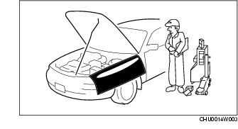
Special Service Tools
• Use special service tools or equivalent when they are required.{: #wp1058611}
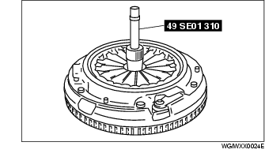
Disassembly
• If the disassembly procedure is complex, requiring many parts to be disassembled, all parts should be marked in a place that will not affect their performance or external appearance and identified so that reassembly can be performed easily and efficiently.{: #wp1058652}
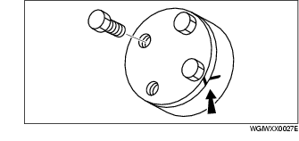
Inspection During Removal, Disassembly
• When removed, each part should be carefully inspected for malfunction, deformation, damage and other problems.{: #wp1058693}
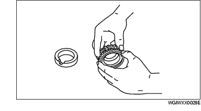
Arrangement of Parts
• All disassembled parts should be carefully arranged for reassembly.{: #wp1058734}
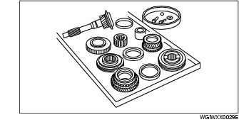
• Be sure to separate or otherwise identify the parts to be replaced from those that will be reused.
Cleaning of Parts
• All parts to be reused should be carefully and thoroughly cleaned in the appropriate method.{: #wp1058785}
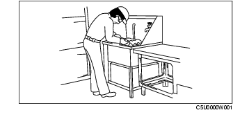
Warning
• Using compressed air can cause dirt and other particles to fly out causing injury to the eyes. Wear protective eye wear whenever using compressed air.
Reassembly
• Standard values, such as torques and certain adjustments, must be strictly observed in the reassembly of all parts.{: #wp1058854}
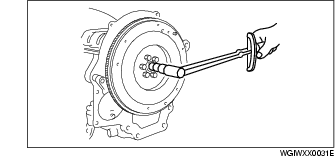
• If removed, the following parts should be replaced with new ones:
- Oil seals {: #wp1058895}- Gaskets {: #wp1058909}- O-rings {: #wp1058919}- Lockwashers {: #wp1058931}- Cotter pins {: #wp1058941}- Nylon nuts
• Depending on location: {: #wp1058961}
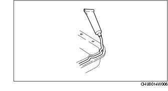
- Sealant and gaskets, or both, should be applied to specified locations. When sealant is applied, parts should be installed before sealant hardens to prevent leakage. {: #wp1058988}- Oil should be applied to the moving components of parts. {: #wp1059002}- Specified oil or grease should be applied at the prescribed locations (such as oil seals) before reassembly.
Adjustment
• Use suitable gauges and testers when making adjustments.{: #wp1059032}
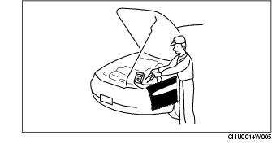
Rubber Parts and Tubing
• Prevent gasoline or oil from getting on rubber parts or tubing.{: #wp1059083}
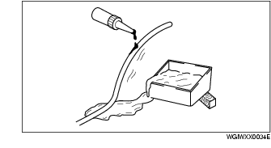
Hose Clamps
• When reinstalling, position the hose clamp in the original location on the hose and squeeze the clamp lightly with large pliers to ensure a good fit.{: #wp1059124}
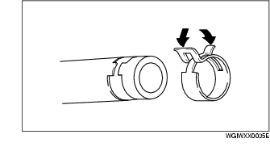
Torque Formulas
• When using a torque wrench-SST or equivalent combination, the written torque must be recalculated due to the extra length that the SST or equivalent adds to the torque wrench. Recalculate the torque by using the following formulas. Choose the formula that applies to you.{: #wp1059190}
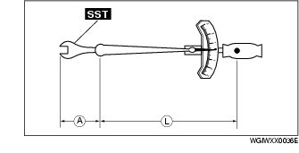
|
Formula {: #wp1059279} |
|
|---|---|
|
N·m {: #wp1059219} |
N·m × [L/ (L+A)] {: #wp1059221} |
|
kgf·m {: #wp1059294} |
kgf·m × [L/ (L+A)] {: #wp1059297} |
|
kgf·cm {: #wp1059301} |
kgf·cm × [L/ (L+A)] {: #wp1059304} |
|
ft·lbf {: #wp1059375} |
ft·lbf × [L/ (L+A)] {: #wp1059378} |
|
in·lbf {: #wp1059401} |
in·lbf × [L/ (L+A)] {: #wp1059404} |
A : {: #wp1059429} The length of the SST{: #wp1059442} past the torque wrench drive. L : {: #wp1059460} The length of the torque wrench.
Vise
• When using a vise, put protective plates in the jaws of the vise to prevent damage to parts.{: #wp1059485}
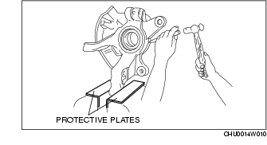